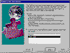

| ||
Brought to you by Inside
Microsoft FrontPage, a ZD Journals publication. Click here for a free issue  .
.
Developing a Web site with the Publish To The Web wizard, as we describe in the accompanying article, is likely to be an iterative process. First, you generate an initial draft and change it several times until it looks right to you. Next, you share it with others on the production team who may suggest further improvements. Then, you publish it to a community of users who make it painfully clear that you need further revisions. In the end, you'll probably rerun the wizard many times with more or less the same settings.
These successive reruns can become tedious, because the wizard may present seven or more screens -- even for a basic Web-publishing task. Figure A shows the first Publish To The Web wizard screen with the Web publication profile check box selected and a specific profile highlighted. This combination will call up all the settings from a previous use of the wizard. All you need to do with the current use is make one or two changes, such as select a new table, and click the Finish button. Since the profile causes the reuse of all the prior selections on unedited screens, be sure you clear any previous unwanted database object selections before clicking Finish.

Click image to enlargeFigure A. The Publish To The Web wizard lets you reuse a previously saved Web profile
You can create a profile on the wizard's last page -- simply select the check box that says you want to save your wizard answers to a publication profile. Then, type a name in the Profile Name text box. There's no built-in mechanism for deleting unwanted profiles, but you can save over them.
Copyright © 1998 ZD Journals, a division of Ziff-Davis Inc. ZD Journals and the ZD Journals logo are trademarks of Ziff-Davis Inc. All rights reserved. Reproduction in whole or in part in any form or medium without express written permission of Ziff-Davis is prohibited.
Did you find this material useful? Gripes? Compliments? Suggestions for other articles? Write us!
© 1999 Microsoft Corporation. All rights reserved. Terms of use.